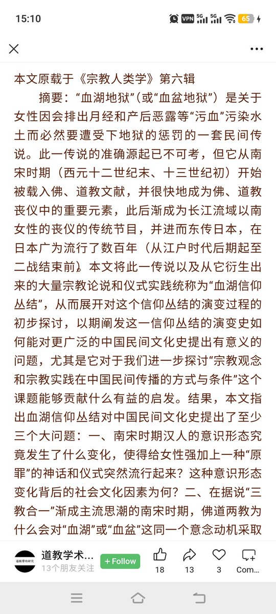
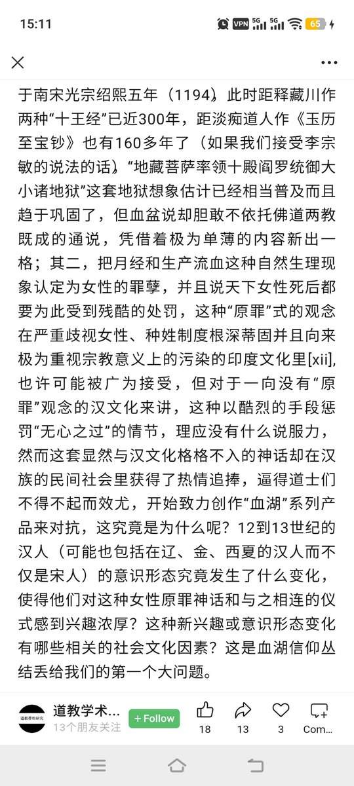

御坂 O.o 雪春📕 (掉fo版)（雪似梅花）
@0502railgun1949
参考近代那些清朝官员都说洋人是用女人裸体的阴户来防御的，这样做法才那么强大
还有那个被道光皇帝请到广州，面对英军的，甚至想出了摆马桶阵
参考天朝的崩溃-鸦片战争再研究


吴二棒
@wuerbangbang
说起经血这个事，可能很多人不知道，中国传统葬礼最晚从宋代起就要专门给女性死者念《血盆经》。为啥呢？因为女人来月经是原罪，会触犯地神、污染水源，所以死后默认全部要堕入血盆地狱受刑。现在很多地方还要给女人做血盆法事。 https://t.co/aMdFJEqaTv https://t.co/7m5l4jPXB5